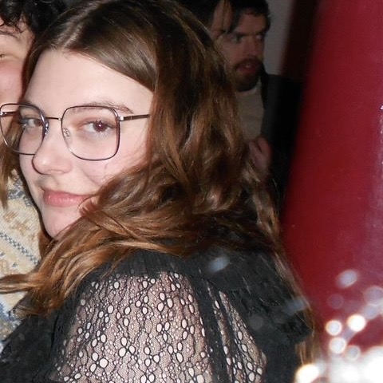

Emma's Recs

Emma Tranter is a writer, bookworker and aspiring surrealist based in London. She is a member of the Re-Enchantment organising committee and blogs about literature, fragrance and feminism at her substack, Heart Notes.
-
Digressions on Some Poems by Frank O'Hara - Joe LeSueur
A delicious, gossipy memoir by Frank O'Hara's friend, roommate and sometimes-lover. It makes for such a strange, vivid portrait of mid-century gay life. It's crying out for a big rerelease to reach the younger readers for whom O'Hara's work has become so dear (perhaps with a foreword from his nephew, who is also writing about him...). I also think it would make a lovely biopic, in the way the right frame can – like Peter Hujar's Day, or My Week with Marilyn.
-
New Blue Sun - André 3000
I often listen to this album when I'm writing; I think it's so beautiful and strange. I really admire André 3000 as an artist who has refused to meet his audience's expectations – but beyond that artistic integrity, he seems to have an insatiable drive to create and always seems to be having fun while doing it. Genuinely very inspiring! His 2025 Met Gala look with the Piano on his back and accompanying surprise piano album drop was huge for me!
-
Belinda - Maria Edgeworth
Written by one of Jane Austen's influences – at the time, vastly more successful – Belinda is a much coarser take on the courtship novel. It follows the eponymous heroine as she is sent to London to find a husband, where she stays as a guest of Lady Delacour, a libertine at odds with her perpetually drunk husband. It is perhaps not as tightly plotted as Austen's work, which is to say there is a lot going on – gun duels in drag, a troubling attempt to groom the perfect wife based on a real case, and an interracial marriage Edgeworth's father pushed her to write out of later editions – but the pace makes it compelling and readable. Be sure to read the 1801 edition!
-
The Herbs
Move over, Paddington, this 1968 stop-motion children's TV show is Michael Bond's true masterpiece. In a magic herb garden lives Parsley the Lion with his friends Dill the Dog, Lady Rosemary and Lord Basil, Bay-Leaf the Gardener, and new herbs he encounters each episode. Admittedly, this is a nostalgic watch for me, as I grew up on video tapes of old episodes, but this is a genuinely warm and charming piece of children's media – weird and surprising and so beautifully crafted. All the episodes are on youtube, and make a very comforting hangover watch.
-
Exquisite Cadavers - Meena Kandasamy
Reading this shockingly underrated novel had me really questioning what is even the point of the Goldsmiths Prize, if a work like this is not on their radar. Kandasamy uses glosses in the margins to provide an insight into the writing life, and the result is a sort of novel within a novel, a reflexive, exacting look at art, love and fascism. There’s plenty to be said about autofictions and the space between writer and constructed tale, but I find myself thinking most about this book when reading for my Capital reading group, amused by the extent (& verve!) of Marx’s footnotes. In this way, Kandasamy’s use of paratexts is both an experimental, artistic flair and an avenue for dialectical thinking and writing, one worth of the attention of any fellow Marxist writer!